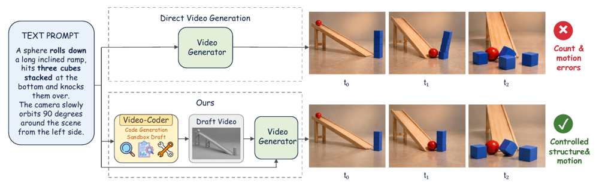
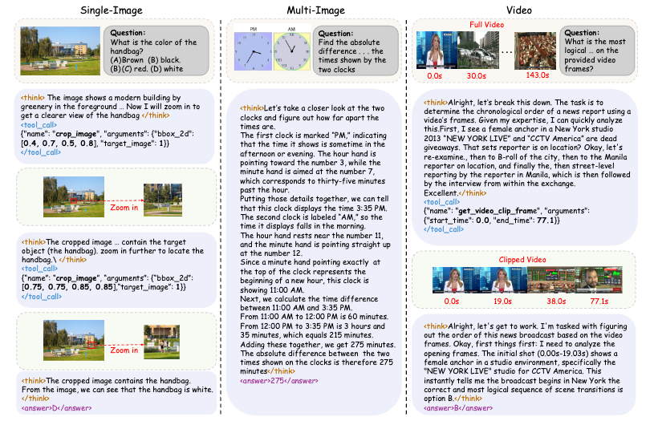
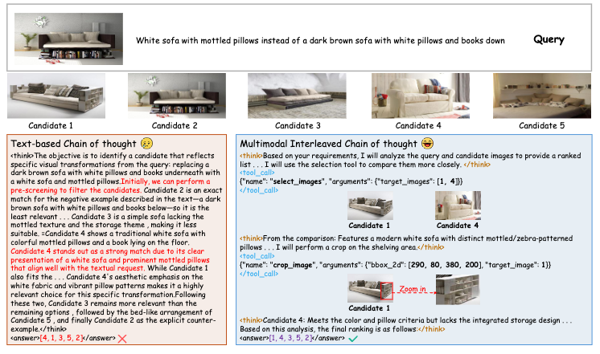
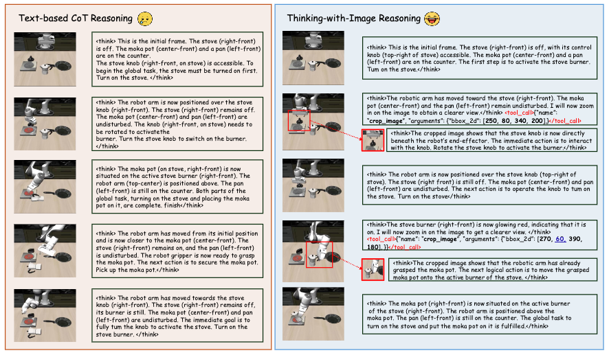

I am a first-year PhD student in the EXceL-Lab at the University of Central Florida, advised by Prof. Yuzhang Shang. Previously, I received my bachelor's degree from Central South University. I interned at CUHK MMLab, where I collaborated with Prof. Xiangyu Yue.
My research interests include Agentic Reasoning, and Agentic Generation. Welcome for discussion and collaboration, feel free to drop me an email.
I am looking for internship opportunities for Summer 2027. If you have an opportunity available, please feel free to reach out to me.
News
- 2026.11: We release Video-Coder, the first attempt to train a code-driven video generation agent.
- 2026.08: V-Retrver is accepted by EMNLP 2026.
- 2026.03: AdaTooler-V is accepted by ACL 2026.
Selected Publications



V-Retrver: Evidence-Driven Agentic Reasoning for Universal Multimodal RetrievalEMNLP 2026
* Equal contribution.

For a complete list, see Google Scholar.